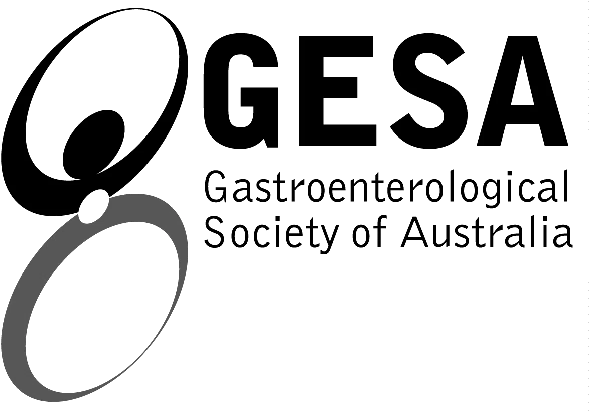
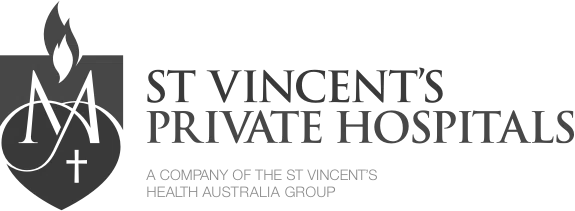
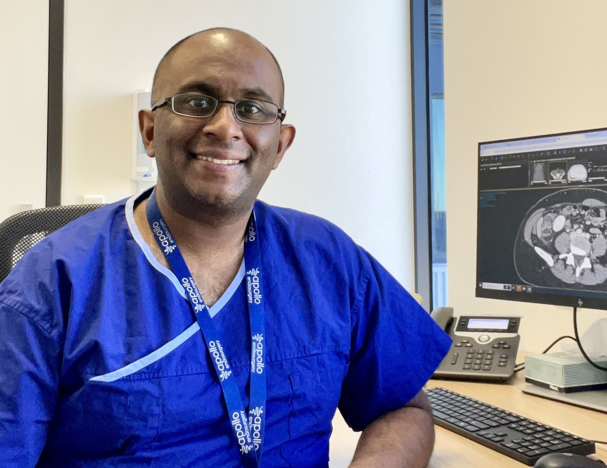
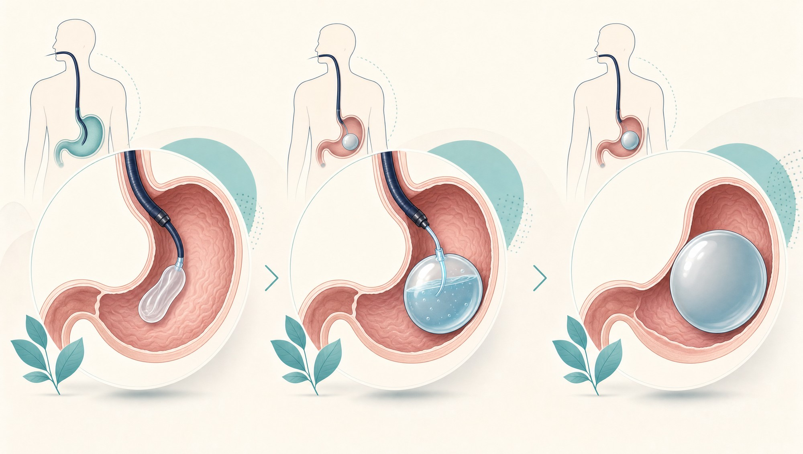
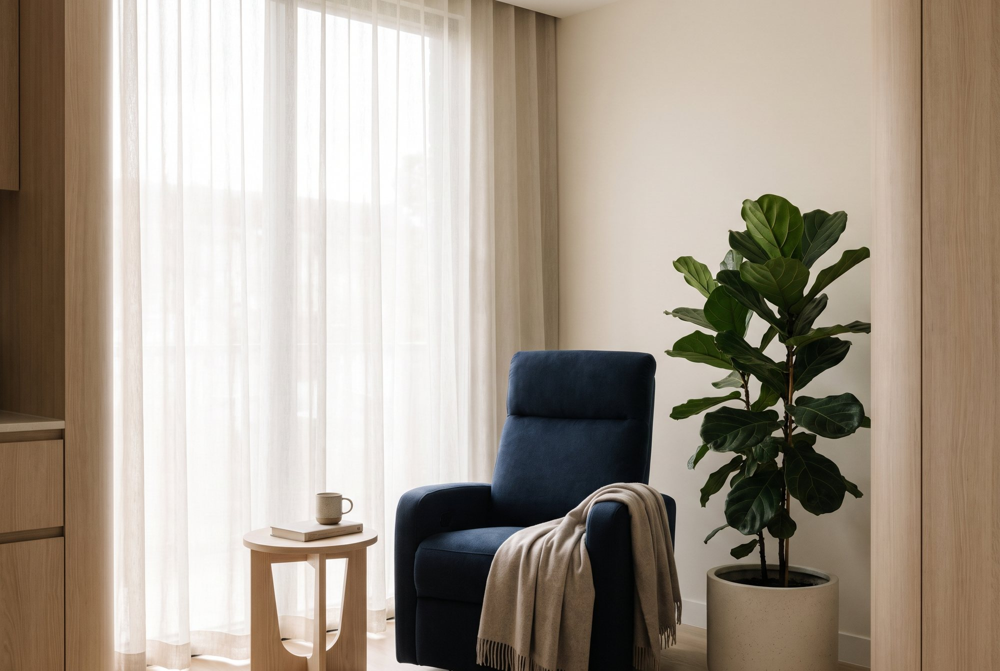
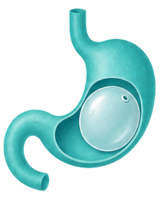
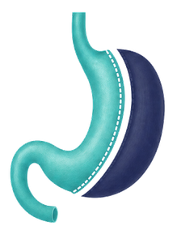
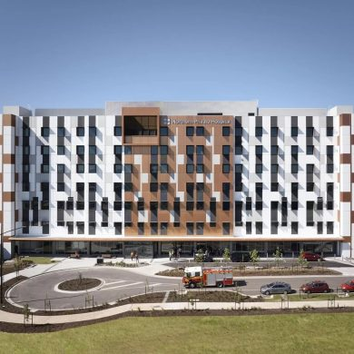
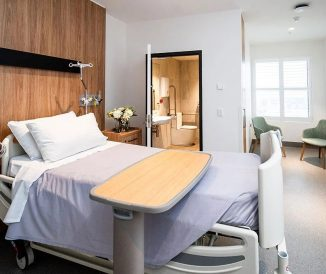

Gastric Balloon · Melbourne
A soft silicone balloon, placed in the stomach by gastroscopy in a single day. No incisions. Temporary and removable. Placed and monitored by a GESA-accredited specialist surgeon, with dietitian support built in.
Appointments in 1–2 weeks · Bulk-billed telehealth for regional patients
Accredited & governed by


A word before you scroll on
Tired of diets that work for a month, then quietly unravel? Frustrated by weight that creeps back no matter how hard you try — but not ready for major surgery? We understand. A gastric balloon gives your stomach a gentle, temporary reset: smaller portions feel satisfying while our dietitians help you rebuild lasting habits. Six to twelve months on, you step forward lighter, more in control, and genuinely proud of how far you've come.

01 Why OptiWeight
The balloon is placed by gastroscopy, an endoscopic procedure. Dr Ashok is GESA accredited and subspecialty trained in upper-GI surgery — so the same hands that place your balloon can manage anything the scope finds.
The Spatz3 is adjustable mid-cycle, so volume can be increased if weight loss plateaus, or reduced if tolerance is difficult. Fixed-volume balloons don't offer that. We fit both and recommend the right one for you.
A balloon restricts capacity; it doesn't change habits on its own. Through our partner Liora Health you'll work with bariatric dietitians and psychologists from before placement through to well after removal.
Personal phone and SMS access through the settling-in period — the fortnight when most questions come up. No call centres, no being passed around.
02 Not ready for an operation
For some people an operation is the right answer. For others it's too big a first step, or not clinically appropriate yet. A balloon gives you twelve months of real restriction — then it comes out.
03 The procedure
A soft silicone balloon — Orbera or Spatz3 — is placed inside the stomach through a gastroscopy, then filled with sterile saline. It reduces how much you can comfortably eat and slows how quickly the stomach empties, so you feel full sooner and for longer. It stays for six to twelve months, then is removed the same way it went in. No incisions, no scars.

A thin endoscope guides the deflated balloon into the stomach under light sedation. No cuts.
The soft balloon is inflated with sterile saline until it takes up gentle, steady space.
Less room, slower emptying — smaller portions feel satisfying while habits are rebuilt.
*Individual results vary. Average figures are drawn from published studies and are not a prediction of your outcome.
04 Balanced information
As with any medical procedure, an intragastric balloon has potential risks and side effects.
Nausea, vomiting, abdominal discomfort, cramping and reflux can occur, particularly during the initial adjustment period. Less common complications can also occur. Dr Ashok will discuss the potential benefits, risks and whether a gastric balloon is appropriate for you during your consultation.

05 Balloon or surgery?
Most people who ask about a balloon are also weighing up a sleeve. Here's how they actually differ — including where surgery is the stronger option.
 Intragastric balloon |  Gastric sleeve | |
|---|---|---|
| Surgery involved | None — placed by gastroscopy | Laparoscopic operation |
| Permanent? | No — removed after 6–12 months | Yes — the stomach is not replaced |
| Average weight loss* | 10–15% total body weight | 60–70% of excess weight |
| Hospital stay | Day procedure | 1 to 3 nights |
| Back to normal life | Days, not weeks | 2 to 4 weeks |
| Procedure fees from | $7,000 | $20,000 |
| Best suited to | Lower starting BMI, a first step, or reducing risk before surgery | Higher BMI and durable long-term results |
*Individual results vary. Figures are average ranges reported in published studies for each procedure and are not a prediction for any individual. Outcomes depend on factors including starting weight, adherence to dietary and lifestyle recommendations, and individual circumstances. Suitability, expected outcome and risk are assessed at consultation.
06 Who places your balloon
Dr Ashok Gunawardene is a registered specialist general surgeon with 15 years of clinical experience across the United Kingdom, New Zealand and Australia. His subspecialist training in upper gastrointestinal surgery is matched by a PhD in surgical research and a teaching role as an Examiner for the Royal Australasian College of Surgeons.
Balloon placement is an endoscopic procedure, and his GESA accreditation is the credential that governs it. It also means that if the gastroscopy finds something unexpected — reflux damage, a hernia — you are already with the specialist who manages it.
“My approach is simple: I want every patient to feel safe, supported, and never rushed. A balloon is a tool. Your long-term health is the goal.” Dr Ashok Gunawardene
07 Your pathway
A short set of questions tells us whether a balloon is likely to be appropriate for you.
Telehealth or in person with Dr Ashok within 1 to 2 weeks. Bulk-billed for regional patients.
Balloon type, dietitian package and an itemised quote — before you commit to anything.
Gastroscopy under sedation, roughly 20 to 30 minutes. Home the same day.
Regular reviews with your dietitian and surgeon. Spatz3 balloons can be adjusted mid-cycle.
Removed by gastroscopy at 6 to 12 months, with a plan for holding your result afterwards.


Where we see patients
Northern Private Hospital — main consulting & surgery site
Wallan Medical & Specialist Centre
Sunbury Consulting Suite
Point Cook Consulting Suite
St Vincent's Private Hospital — surgery site
Australia-wide, priority for regional Victoria
08 The investment
| Procedure | Setting | From |
|---|---|---|
| Intragastric Balloon (Orbera) | Day procedure | $7,000 |
| Intragastric Balloon (Spatz3, adjustable) | Day procedure | At consult |
The day facility, sedation, and balloon placement and removal.
Your consultation, pre-procedure investigations, and dietitian & psychology support.
Disclaimer: The above fees are estimates only. An accurate individualised quote is provided following consultation and satisfactory pre-procedure workup. Intragastric balloons are generally not covered by private health insurance or Medicare. Fees current as of May 2026.
60-second check
A few quick questions and we'll tell you which pathway fits. No commitment, no judgement — just clarity.
Prefer to talk? Call 03 8679 6557.
09 Common questions
Balloons generally suit people with a lower starting BMI than surgical candidates, people who aren't ready for a permanent operation, and people who need to reduce their surgical risk before an operation. Suitability depends on your weight, health history and previous gastric surgery, and is confirmed at consultation.
Procedure fees start from $7,000 for an Orbera balloon. This covers the procedure itself, including the day facility, sedation and placement. Dietitian support is quoted separately and is strongly recommended. Adjustable Spatz3 balloons are quoted at consultation. Balloons are generally not covered by private health insurance or Medicare, so most patients self-fund. You will receive an itemised quote before you commit to anything.
Placement is done under sedation and takes around 20 to 30 minutes. The first few days are the adjustment period. Nausea and cramping are common while your stomach settles around the balloon, and we manage this with medication and a staged diet. Most people are through it within a week.
Published studies report average total body weight loss of approximately 10 to 15% with intragastric balloon treatment. Individual results vary and depend on factors including starting weight, adherence to dietary and lifestyle recommendations, and individual circumstances. Your result depends heavily on what happens alongside the balloon, which is why dietitian and psychology support is built into the pathway rather than sold as an extra.
It's removed by gastroscopy, the same way it was placed. The months before removal are spent building the eating patterns that hold your result, and we plan the transition with you well before the date. If you decide a surgical pathway is the right next step, that conversation is already open.
Orbera is a fixed-volume balloon. Spatz3 is adjustable. Its volume can be increased mid-cycle if weight loss plateaus, or reduced if you're finding it difficult to tolerate. Dr Ashok will recommend one based on your goals and how you're likely to respond.
No referral is needed to book a discovery call or an initial consultation. A referral may be useful for other parts of your care, and we'll tell you if that applies to you.
Sometimes, but it depends entirely on what was done previously. Previous sleeve, bypass or band surgery changes stomach anatomy and may make a balloon unsuitable. This is assessed with a full upper-GI review before anything is recommended.
Ready when you are
60 seconds. No obligation. A clear answer on whether a balloon is the right fit for you.